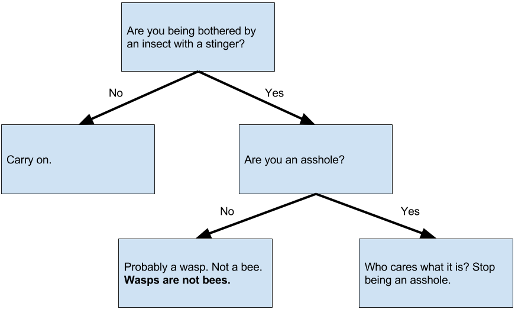

This is a wasp. It's a mean SOB, and it will sting you if you're not incredibly well-behaved. Then it will fly
away to cause more problems for more people in a horrifying cycle of pain. We don't like wasps. Let the hatred
of wasps flow through you.
This is a bee (notice how her body is shorter, rounder, fuzzier,
and generally cuter). She pollinates plants, helps make honey, and
is really rather friendly. She has never stung anyone before: doing
so would literally kill her, so she'll only do it when she thinks
that she or her hive is in immense danger. Just act normal (and
stay away from the hive, if it's nearby) and you won't have any
problems. We like bees a lot, please don't slander them by calling
their evil wasp cousins "bees".

Here is a handy Stinging Insect Identification Flowchart.